Новгоднее восстановление tNPS
Проблема
Показатель tNPS МТС Premium снижался на протяжении двух кварталов, и прогноз показывал дальнейшее падение к концу года. Целевое значение годового KPI казалось недостижимым, до конца года оставалось критически мало времени и ресурсов для того, чтобы наверстать недостаток процентных пунктов через обычные продуктовые улучшения.
Основная причина заключалась в том, что подписка стагнировала: команда сосредоточилась на разработке новой версии подписки, а действующая работала без активного развития. Пользователи продолжали платить, но переставали ощущать ценность.
Параллельно опросы пользователей показали инсайт: люди мало используют сервисы экосистемы не потому, что не знают об их существовании, а потому, что информация о сервисах воспринималась как сухая и безличная, что не привлекало их попробовать.
Стратегия и критерии успеха
Цель
Быстро и с минимальными ресурсами поднять tNPS в декабре и закрыть годовой KPI, используя оставшийся бюджет кешбэка в коммуникациях.
Разработка нового сложного функционала на бэкенде была исключена, т.к. не было ни времени, ни ресурса в оставшееся время года. Поэтому решение строилось на двух простых и относительно дёшевых во внедрении механиках, но с разной задачей: одна должна была создать праздничное настроение и показать ценность сервисов, вторая механика призвана была стать прямым каналом достижения целевого значения метрики tNPS.
Деды морозы
Новый эмоциональный формат подачи сервисов: интерактивные элементы на витрине вместо сухой информации.
Критерий успеха: для подписчиков — переход в сервис из модалки, для неподписчиков — подключение подписки.
Мандарины
Прямая эмоция заботы: подарить кешбэк без условий и сразу замерить отклик.
Критерий успеха: рост tNPS сразу после активации подарка, высокий процент завершённых ответов на опрос.
15.12
23.12
30.12
Решение 1: «Мандарины» — подарок как способ восстановить лояльность
Цель
Механика строилась вокруг простой идеи: дать пользователям что‑то ценное просто так, без условий, и сразу после подарка замерить их готовность рекомендовать продукт.
Ключевое решение: никаких условий активации. Подарок без условий воспринимается как забота, а не как маркетинговый трюк, и на этой эмоции строился рост tNPS.
Как это работало
При заходе на витрину появлялся мандарин с CTA получить подарок. Пользователь получал кешбэк в подарок от Деда Мороза: без заданий и условий активации. Сразу после этого он видел tNPS-опрос.
Для неподписчиков сценарий менялся: вместо подарка был оффер подключить МТС Premium и получить кешбэк.
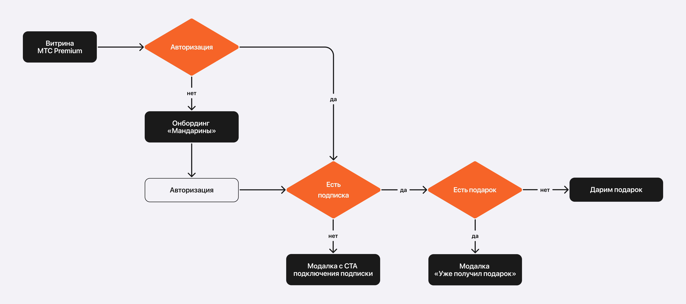
Именно эта механика была единственным прямым каналом получения нужной для KPI метрики: tNPS-опрос показывался сразу после начисления подарка, когда эмоция была максимально положительной, что позволило достичь целевой показатель.
Неожиданный эффект
Акция стала виральной. Пользователи начали делиться скриншотами в соцсетях, что создало органическое усиление лояльности через сарафанное радио. Этого в гипотезах не было.
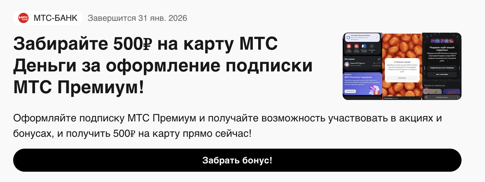
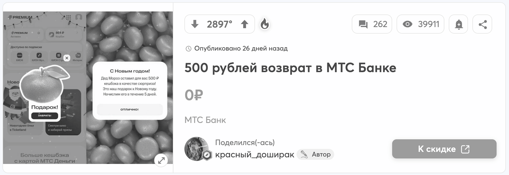
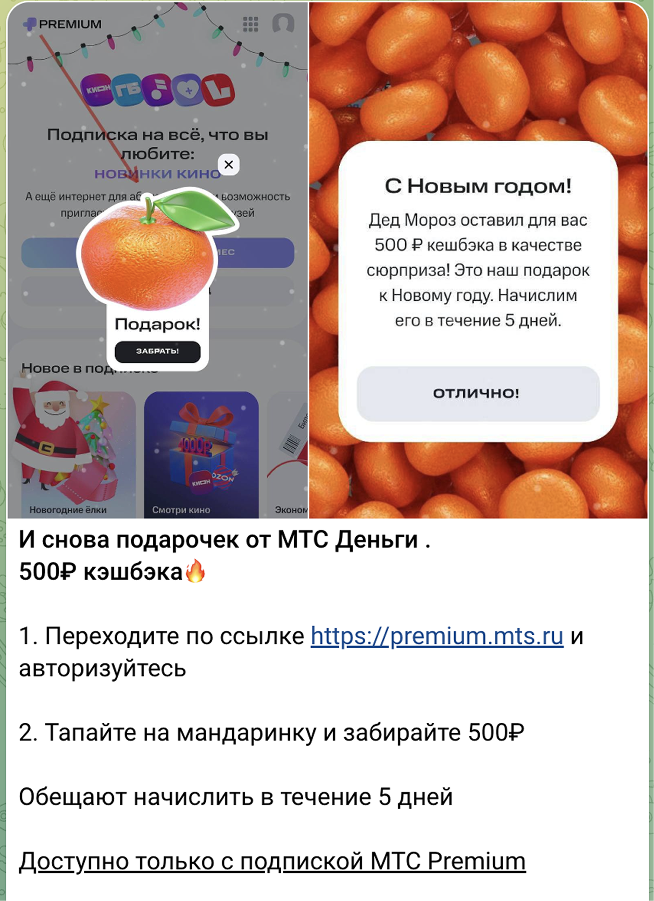
Решение 2: «Деды Морозы» — новый способ показать ценность экосистемы
В отличие от «Мандаринов» эта механика не была напрямую подключена к опросу tNPS, её задача была другой: создать праздничное настроение на витрине и мягко показать ценность сервисов, которые раньше выглядели «сухими».
Для этого витрину дополнили новогодними пожеланиями от Дедов Морозов. Так сервисы показались как живые точки входа с понятным поводом попробовать.
Почему именно такой формат
Вместо ещё одного баннера выбрали маленькие прилипающие интерактивные элементы, так обошли баннерную слепоту и не сломали привычные сценарии. Мягкая анимация давала ощущение праздника и удерживала внимание без агрессивного навязывания.
Как это работало
На витрину добавили новогодний слой: снег, гирлянды и три интерактивных Деда Мороза с контекстными анимациями. Клик открывал модалку с новогодним пожеланием от случайного сервиса и одним CTA: переход в сервис (для подписчиков) или флоу подключения подписки (для неподписчиков).
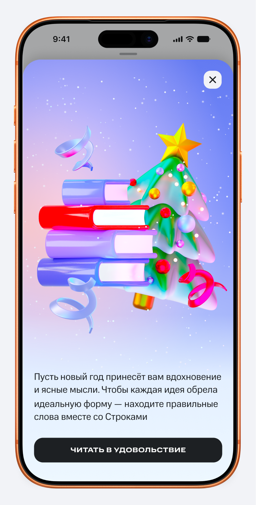
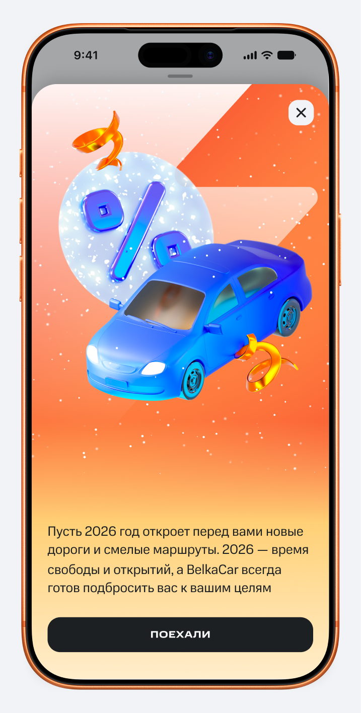
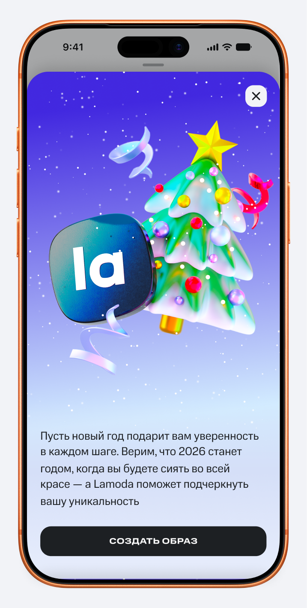
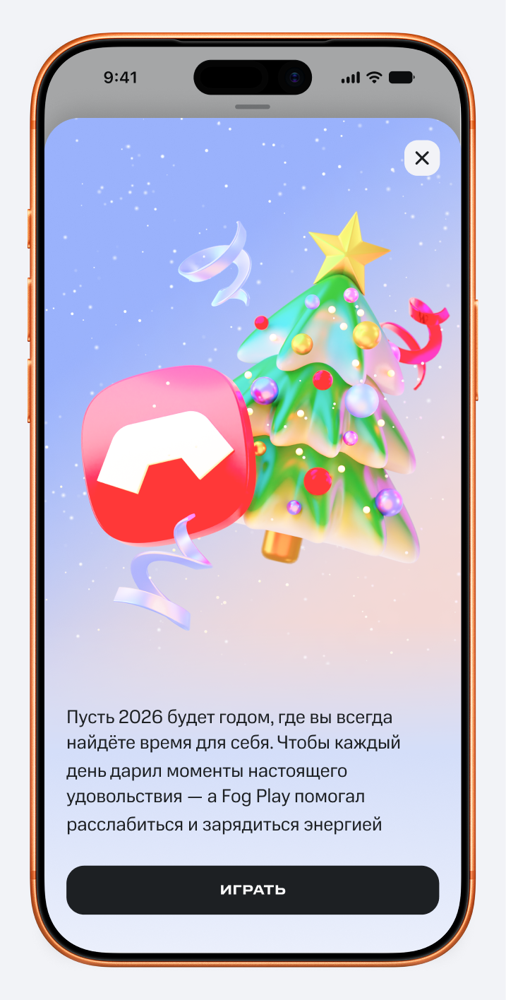
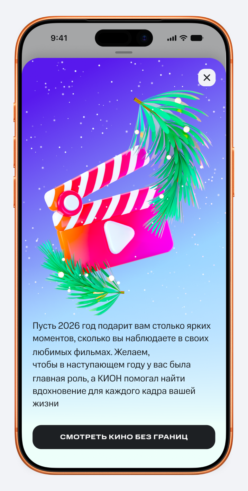
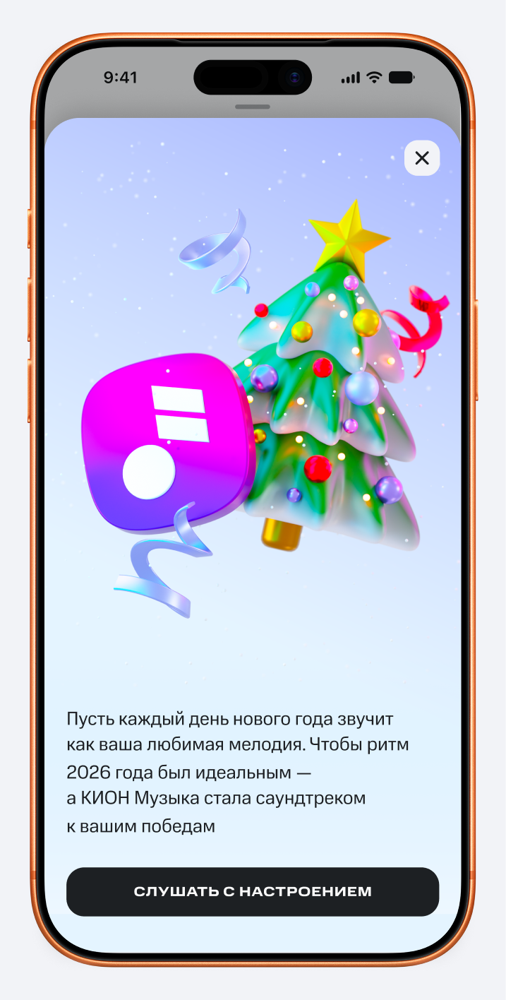
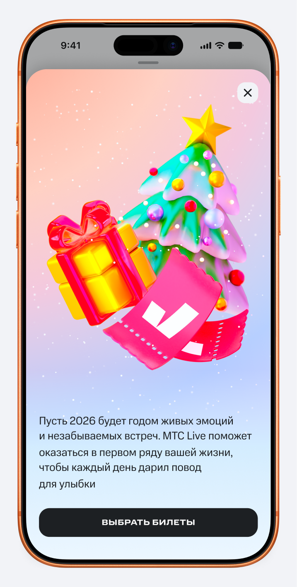
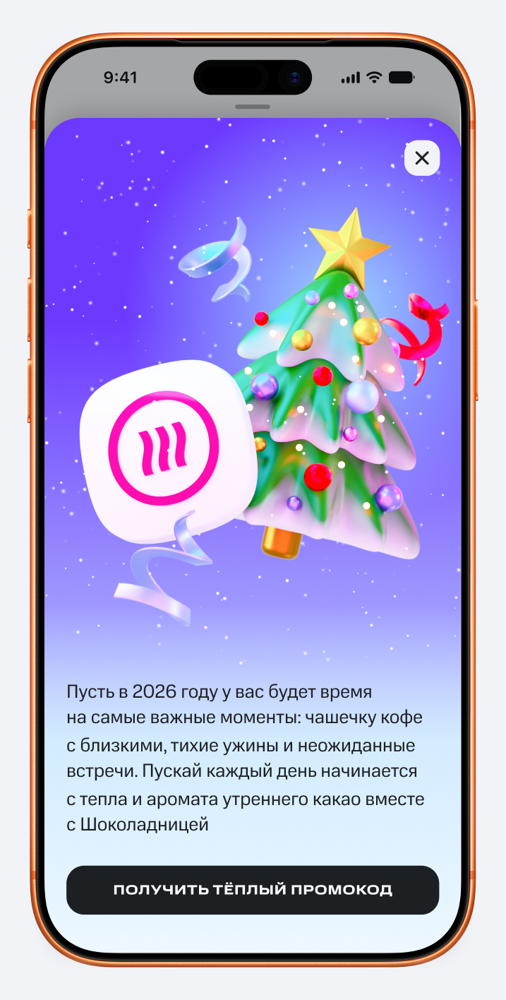
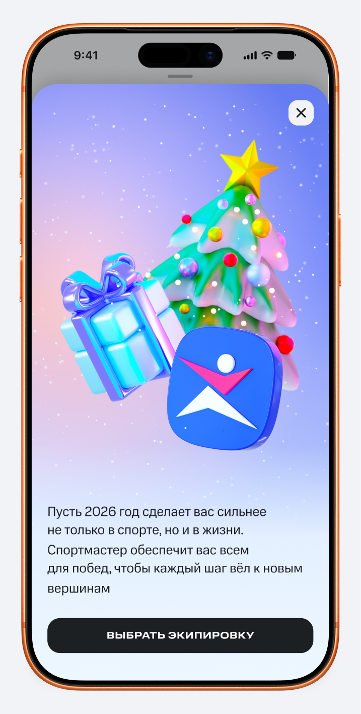
Технические ограничения и скорость
Реализовали на фронтенде за неделю без изменений бэкенда: я проработала концепцию и интерфейсы, разработчик внедрил, вместе докрутили анимации по заметности и комфорту.
Как проверяли
Мандарины
Результаты сравнивали с tNPS до акции. Отдельный опрос внутри продукта, а не часть регулярного замера, позволил зафиксировать эмоцию в момент максимальной вовлечённости .
Деды Морозы
Планировали измерять переходы в сервис (для подписчиков) и конверсию в подключение подписки (для неподписчиков). Из-за технических проблем в пиковый период данные по этой механике не сохранились. По оценке команды видели положительную динамику в том, что пользователи активнее заходили в сервисы.
Результаты
По механике «Мандарины»
По механике «Деды Морозы»
Данные аналитики потеряны из-за технических проблем в пиковый период. По качественной оценке команды наблюдался рост интереса к сервисам. Формат признан успешным.
Команда и мой вклад
Оба дизайна вела я одна в кросс-функциональной команде с продактом, аналитиком, разработчиком и маркетологом. Продакт отвечал за цели и метрики, аналитик за замеры tNPS и данные по переходам, разработчик за фронтенд-реализацию, маркетолог за коммуникацию и бюджет кешбэка.
Мой вклад
- Сформулировала концепцию обоих форматов и их связку в единую стратегию, где каждая механика решает свою задачу при нулевом дополнительном бюджете на разработку
- Спроектировала UX-сценарии для четырёх веток: подписчик/неподписчик для каждой механики
- Выбрала формат прилипающих интерактивных элементов для «Дедов Морозов» как способ обойти баннерную слепоту
- Реализовала весь дизайн в рамках технического ограничения времени и ресурсов
Выводы
- Сезонные механики могут быстро влиять на лояльность, если попадают в эмоциональный контекст пользователей. Эксперимент показал, что такие форматы работают как система. Сейчас похожие механики на главной витрине стали регулярными, они привлекают пользователей к партнёрским промокодам и скидкам через живой интерактивный формат
- Виральный эффект показал, что неожиданная забота мотивирует делиться опытом, создавая органическое усиление. Это не планировалось, а значит, есть потенциал проектировать такие механики намеренно
- Потеря данных по «Дедам Морозам» показала, что нужно выделять больше ресурса для аналитики в пиковые периоды